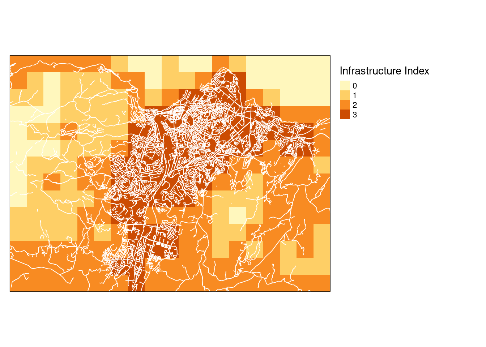
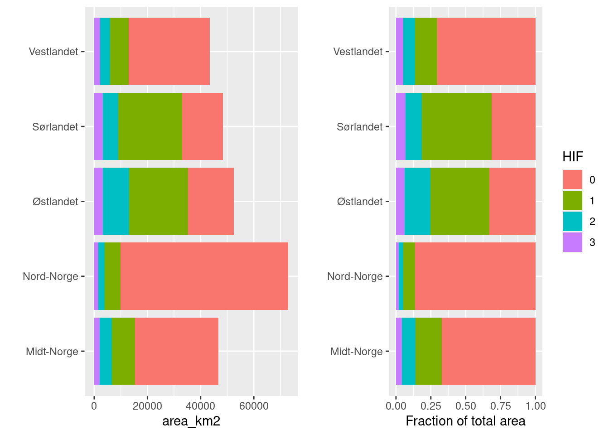

dir <- substr(getwd(), 1,2)7 Homogeneous Impact Areas
Author and date:
Anders Kolstad
7.1 Introduction
This chapter documents the creation of a wall-to-wall map of homogeneous impact areas in Norway. The map is produced by binning values in the infrastructure index into four discrete categories. It is likely to be a good predictor for some indicators, such as slitasje and the presence of alien species.
7.2 About the underlying data
The infrastructure index is explained here. It is a wall-to-wall raster over Norway with 100 m resolution. Each pixel is given a value along a continuous gradient from 0 to around 15.4, representing the frequency of surrounding cells within 500 m with human infrastructure (houses, roads, ect).
7.2.1 Representativity in time and space
The infrastructure index is calculated with data that have slightly different dates, but can be said to represent year 2015. The data covers all of mainland Norway.
7.2.2 References
Bakkestuen, V., Dervo, B.K., Bærum, K.M. og Erikstad, L. 2022. Prediksjonsmodellering av naturtyper i ferskvann. NINA Rapport 2079. Norsk institutt for naturforskning.
7.3 Analyses
7.3.1 Import data
The path must be conditional:
path <- ifelse(dir == "C:",
"R:/GeoSpatialData/Utility_governmentalServices/Norway_Infrastructure_Index/Original/Infrastrukturindeks_UTM33/infra_tiff.tif",
"/data/R/GeoSpatialData/Utility_governmentalServices/Norway_Infrastructure_Index/Original/Infrastrukturindeks_UTM33/infra_tiff.tif")Import a stars proxy (no data imported yet)
infra <- stars::read_stars(path)Print the coordinate reference system:
st_crs(infra)$input[1] "WGS_1984_UTM_Zone_33N"7.3.2 Trondheim example
It’s easier to see what’s happening if we zoom in a bit. Lets get a boundary box around Trondheim.
myBB <- st_bbox(c(xmin=260520.12, xmax = 278587.56,
ymin = 7032142.5, ymax = 7045245.27),
crs = st_crs(infra))Cropping the raster to the bbox
infra_trd <- sf::st_crop(infra, myBB)7.3.2.1 Get OSM highways
Lets download some base maps to help validate and contextualize the infrastructure index.
Transform to lat long due to osm requirements
infra_trd_ll <- sf::st_transform(infra_trd, 4326)Get the boundary box of the cropped raster
myBB_ll <- sf::st_bbox(infra_trd_ll)Download highways using the above bbox.
hw <-
osmplotr::extract_osm_objects(
bbox = myBB_ll,
key = "highway",
sf = T)Transforming highway data back into utm, although not strictly necessary.
hw_utm <- sf::st_transform(hw, sf::st_crs(infra_trd)) This object contains too many roads (about 30k). I’ll take out the unnamed roads.
hw_utm <- hw_utm[!is.na(hw_utm$name),]7.3.2.2 Discretize
Here I define a simplified categorical typology for the infrastructure index using four classes.
names(infra_trd) <- "infrastructureIndex"
infra_trd_reclassed <- infra_trd %>%
mutate(infrastructureIndex = case_when(
infrastructureIndex < 1 ~ 0,
infrastructureIndex < 6 ~ 1,
infrastructureIndex < 12 ~ 2,
infrastructureIndex >= 12 ~ 3
))Lets plot these two maps side by side
map_trd_reclassed <- tm_shape(infra_trd_reclassed)+
tm_raster(title="Infrastructure Index",
#palette = "viridis",
style="cat")+
tm_layout(legend.outside = T)+
tm_shape(hw_utm)+
tm_lines(col="white")map_trd <- tm_shape(infra_trd)+
tm_raster(title="Infrastructure Index",
style="cont",
palette = "viridis")+
tm_layout(legend.outside = T)+
tm_shape(hw_utm)+
tm_lines(col="white")tmap_arrange(map_trd,
map_trd_reclassed,
ncol=1)stars_proxy object shown at 181 by 132 cells.
stars_proxy object shown at 181 by 132 cells.
I tweaked the thresholds for the bins so that the categories match my knowledge about the land use intensity in Trondheim, for example that most of the forest next to Trondheim (to the left in the map) was in the second lowest class. This looks pretty good to me. It depicts a gradient in human presence from high within the built zone, to no to very low in the forests and mountains to the west. Note that there is still considerable human activity also there in the form of outdoor recreation and even forestry.
7.3.2.3 Aggregate
The resolution in this map is more than we need, and the size of the data implies that the next step, the vectorization, would take too long. We therefore aggregate, or reduce the resolution.
dim <- st_dimensions(infra)
paste("Resolution is", dim$x$delta, "by", dim$x$delta, "meters")[1] "Resolution is 100 by 100 meters"infra_trd_reclassed_agg <- st_warp(infra_trd_reclassed, cellsize = c(1000, 1000),
crs = st_crs(infra_trd_reclassed),
use_gdal = TRUE,
method = "average")dim <- st_dimensions(infra_trd_reclassed_agg)
paste("Resolution is", dim$x$delta, "by", dim$x$delta, "meters")[1] "Resolution is 1000 by 1000 meters"Each cell is now the average of the aggregated cells, and hence the value is continuous again. Let’s make it discrete.
names(infra_trd_reclassed_agg) <- "infrastructureIndex"
infra_trd_reclassed_agg <- infra_trd_reclassed_agg %>%
mutate(infrastructureIndex = case_when(
infrastructureIndex < 1 ~ 0,
infrastructureIndex < 6 ~ 1,
infrastructureIndex < 12 ~ 2,
infrastructureIndex >= 12 ~ 3
))tm_shape(infra_trd_reclassed_agg)+
tm_raster(title="Infrastructure Index",
style="cat")+
tm_layout(legend.outside = T)+
tm_shape(hw_utm)+
tm_lines(col="white")
This resolution is more than good enough for our purpose here. I see that the map extends a bit into the fjord. We want to cut away these areas. We can use a map of the outline of Norway to do this.
outline <- st_read("data/outlineOfNorway_EPSG25833.shp")Reading layer `outlineOfNorway_EPSG25833' from data source
`/data/scratch/Matt_bookdown__debug/ecosystemCondition/data/outlineOfNorway_EPSG25833.shp'
using driver `ESRI Shapefile'
Simple feature collection with 1 feature and 2 fields
Geometry type: MULTIPOLYGON
Dimension: XY
Bounding box: xmin: -113472.7 ymin: 6448359 xmax: 1114618 ymax: 7939917
Projected CRS: ETRS89 / UTM zone 33NThe CRS needs to be identical
infra_trd_reclassed_agg <- st_transform(infra_trd_reclassed_agg, 25833)infra_trd_reclassed_agg_terrestrial <- st_crop(infra_trd_reclassed_agg, outline)Warning in st_crop.stars(infra_trd_reclassed_agg, outline): crop only crops
regular gridstm_shape(infra_trd_reclassed_agg_terrestrial)+
tm_raster(title="Infrastructure Index",
style="cat")+
tm_layout(legend.outside = T)+
tm_shape(hw_utm)+
tm_lines(col="white")+
tm_shape(outline)+
tm_borders(lwd =2,
col = "black")
I have treated the raster cells as points when cropping, so that cells where the center of the cell is outside the terrestrial delineation are removed. I think this makes the most sense for unbiased area statistics, but some coastal indicator data could also be excluded because of this. The errors would be smaller with a finer resolution raster, but computation time is a problem.
7.3.3 Aggregate the entire map to 1x1 km
# runtime about 30 sec
infra_agg <- st_warp(infra, cellsize = c(1000, 1000),
crs = st_crs(infra),
use_gdal = TRUE,
method = "average")
# The CRS needs to be identical for st_crop
infra_agg <- st_transform(infra_agg, 25833)7.3.4 Cut out marine areas
I see that the map extends a bit into the fjord. We want to cut away these areas. We can use a map of the outline of Norway to do this.
infra_agg_terrestrial <- st_crop(infra_agg, outline)
saveRDS(infra_agg_terrestrial, "P:/41201785_okologisk_tilstand_2022_2023/data/cache/infra_agg_terrestrial.rds")7.3.5 Discretize the entire map
names(infra_agg_terrestrial) <- "infrastructureIndex"
infra_agg_discrete <- infra_agg_terrestrial %>%
mutate(infrastructureIndex = case_when(
infrastructureIndex < 1 ~ 0,
infrastructureIndex < 6 ~ 1,
infrastructureIndex < 12 ~ 2,
infrastructureIndex >= 12 ~ 3
))7.3.6 Vectorize
This step might seem rather stupid. We want to vectorize a rather large raster. This makes it a quite big data object. The reason is that there is no really good way to burn polygon data on to raster grid cells after the disuse of the {raster} package. It was not straight forward then either. But calculating intersections between polygons is very fast and easy.
infra_agg_discrete_vect <-
eaTools::ea_homogeneous_area(infra_agg_discrete,
groups = infrastructureIndex)
path <- ifelse(dir == "C:",
"P:/41201785_okologisk_tilstand_2022_2023/data/cache/",
"/data/P-Prosjekter2/41201785_okologisk_tilstand_2022_2023/data/cache/")
saveRDS(infra_agg_discrete_vect, paste0(path, "infra_agg_discrete_vect.rds"))Let’s plot this now. First, lets crop it to reduce computation time.
myBB <- st_bbox(c(xmin=260520.12, xmax = 278587.56,
ymin = 7032142.5, ymax = 7045245.27),
crs = st_crs(infra_agg_discrete_vect))
infra_agg_discrete_vect_trd <- st_crop(infra_agg_discrete_vect, myBB)Warning: attribute variables are assumed to be spatially constant throughout
all geometriestm_shape(infra_agg_discrete_vect_trd)+
tm_polygons(col="infrastructureIndex",
style = "cat")+
tm_layout(legend.outside = T)+
tm_shape(hw_utm)+
tm_lines(col="white")
As can be seen in the figure above, st_warp merges grid cells that have the same value, and the vectorized raster doesn’t end up being that big in the end.
7.4 Check national distribution
regions <- sf::read_sf("data/regions.shp", options = "ENCODING=UTF8")
unique(regions$region)[1] "Nord-Norge" "Midt-Norge" "Østlandet" "Vestlandet" "Sørlandet" st_crs(infra_agg_discrete_vect) == st_crs(regions)[1] TRUESince the two layers are completely overlapping, we can get the intersections
infra_stats <- eaTools::ea_homogeneous_area(infra_agg_discrete_vect,
regions,
keep1 = "infrastructureIndex",
keep2 = "region")
saveRDS(infra_stats, "P:/41201785_okologisk_tilstand_2022_2023/data/cache/infra_stats.rds")Let’s calculate the areas of these polygons and compare the HIF in the five regions.
infra_stats$area_km2 <- units::drop_units(sf::st_area(infra_stats))
infra_stats$area_km2 <- infra_stats$area_km2/1000
temp <- as.data.frame(infra_stats) %>%
group_by(region, infrastructureIndex) %>%
summarise(area_km2 = mean(area_km2))`summarise()` has grouped output by 'region'. You can override using the
`.groups` argument.ggarrange(
ggplot(temp, aes(x = region, y = area_km2, fill = factor(infrastructureIndex)))+
geom_bar(position = "stack", stat = "identity")+
guides(fill = "none")+
coord_flip()+
xlab("")
,
ggplot(temp, aes(x = region, y = area_km2, fill = factor(infrastructureIndex)))+
geom_bar(position = "fill", stat = "identity")+
guides(fill = guide_legend("HIF"))+
coord_flip()+
ylab("Fraction of total area")+
xlab("")
)
This distribution looks reasonable. The relative proportions are similar in the five regions, but Østlandet and Sørlandet have more infrastructure in general.
Here are the numbers behind the figure above.
temp$area_km2 <- round(temp$area_km2,0)
DT::datatable(temp)7.5 Export
I will write this data to the NINA P server.
saveRDS(infra_agg_discrete_vect, "P:/41201785_okologisk_tilstand_2022_2023/data/infrastrukturindeks/homogeneous_impact_areas.rds")HIA_returned <- readRDS("P:/41201785_okologisk_tilstand_2022_2023/data/infrastrukturindeks/homogeneous_impact_areas.rds")